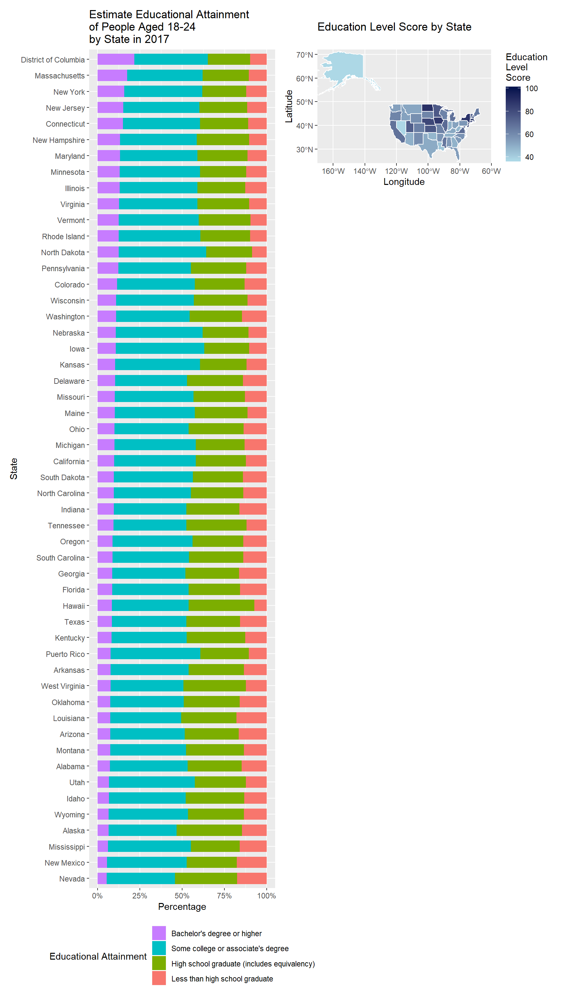

In this section, you will see each state or region’s educational attainment distribution and suicide rate.
Suicide is one of the several major causes of death in the US. Suicide death rate varies significantly across the nation. The data of suicide mortality by state is from National Center for Health Statistics, adjusted for differences in age-distribution and population size. From the data, we see that Montana has the highest suicide death rate of 28.9%, while New York has the lowest suicide death rate of 8.1%. The range is 20.8%.
From the map, we find that the west has higher overall suicide death rate than the east, while a strict geographic trend cannot be observed. Therefore, we want to explore other factors that may account for the various suicide death rates among states in the US.
One of the many possible reasons that account for the various suicide death rate is education level. Educational attainment is defined as the highest level of education that an individual has completed. The Estimate Educational Attainment data is from the United States Census Bureau. District of Columbia, followed by Massachusetts, has the highest percent(21.8%) of people aged 18-24 holding a bachelor or higher degree; while Nevada has the lowest percent(5.3%). The range is 16.5%.
Below you can find a stacked bar graph of educational attainment of 52 states and regions in the US. States and regions are in the descending order of percentages of people holding a bachelor or higher degree.

(The education level raw score is calculated using the equation: score = (less than high school graduate%)^1 + (high school graduate%)^2 + (some college or associate’s degree%)^3 + (bachelor’s degree or higher%)^4. The raw score is then adjusted, with Massachusetts’ score set to 100.）
Education attainment score is negatively correlate with suicide rate. As indicated by the scatter plot, higher suicide rates are more likely to occur in states where overall education attainment is low.
Moderate negative correlation is found between education attainment and suicide rate, which means that the higher the education attainment, the lower the suicide rate. Possible explanation for this result could be that people who do not drop out of school tend to have better family background, thus they are less likely to have childhood trauma (abusive parents). The result emphasizes the importance of social determinants in suicide risk.